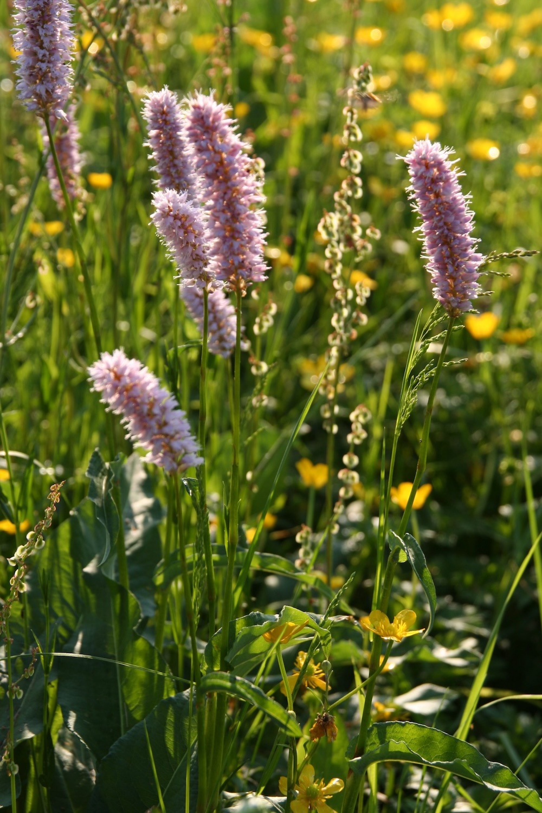
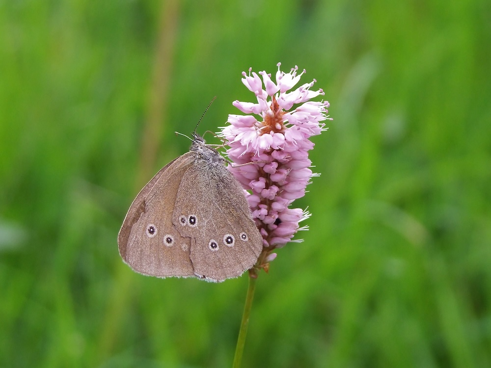

Rosafarbene Kerzen über feuchten Wiesen — mit einer Wurzel, die wirklich schlängelt.



Die schlängelnde Wurzel
Der Name „Bistorta" kommt aus dem Lateinischen und bedeutet „zweimal gedreht". Tatsächlich windet sich der Wurzelstock S-förmig durch den Boden — daher auch der alte deutsche Name „Schlangen-Knöterich". Diese stärkereiche Wurzel galt früher als Notnahrung; sie wurde gemahlen und zu Brot verarbeitet, vor allem in Bergregionen.
Wertvoll für Insekten und Vögel
Die dichten rosafarbenen Blütenähren sind beliebt bei Hummeln und Wildbienen. Die kleinen, einsamigen Nussfrüchte werden später von Vögeln gefressen — der Wiesen-Knöterich ist also nicht nur Bestäubernahrung, sondern auch wichtige Vogel-Futterquelle. In intakten Feuchtwiesen bildet er oft große Bestände, die im Mai und Juni leuchten.
Wissenswertes & Merksätze
Erkennungszeichen
Aufrechter, unverzweigter Stängel. Längliche Grundblätter mit gewelltem Rand. An der Spitze eine dichte, walzenförmige Blütenähre, hellrosa.
Standortzeiger
Bistorta officinalis braucht feuchte, mäßig nährstoffreiche Wiesen. Ihr Vorkommen zeigt traditionell-extensive Wiesenbewirtschaftung — wo intensiv gedüngt oder entwässert wird, verschwindet sie.